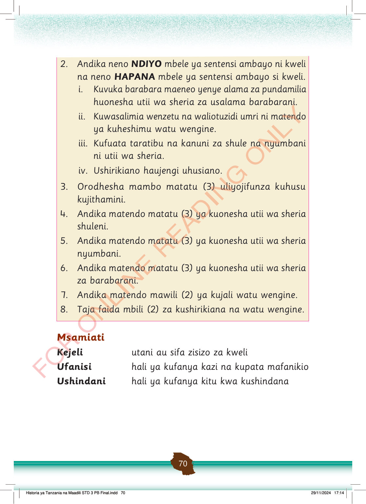

2.
Andika neno NDIYO mbele ya sentensi ambayo ni kweli na neno HAPANA mbele ya sentensi ambayo si kweli.
i. Kuvuka barabara maeneo yenye alama za pundamilia huonesha utii wa sheria za usalama barabarani.
ii. Kuwasalimia wenzetu na waliotuzidi umri ni matendo ya kuheshimu watu wengine.
iii. Kufuata taratibu na kanuni za shule na nyumbani ni utii wa sheria.
iv. Ushirikiano haujengi uhusiano.
true
true
true
false
3.
Orodhesha mambo matatu (3) uliyojifunza kuhusu kujithamini.
4.
Andika matendo matatu (3) ya kuonesha utii wa sheria shuleni.
5.
Andika matendo matatu (3) ya kuonesha utii wa sheria nyumbani.
6.
Andika matendo matatu (3) ya kuonesha utii wa sheria za barabarani.
7.
Andika matendo mawili (2) ya kujali watu wengine.
8.
Taja faida mbili (2) za kushirikiana na watu wengine.
Msamiati
Kejeli
utani au sifa zisizo za kweli
Ufanisi
hali ya kufanya kazi na kupata mafanikio
Ushindani
hali ya kufanya kitu kwa kushindana